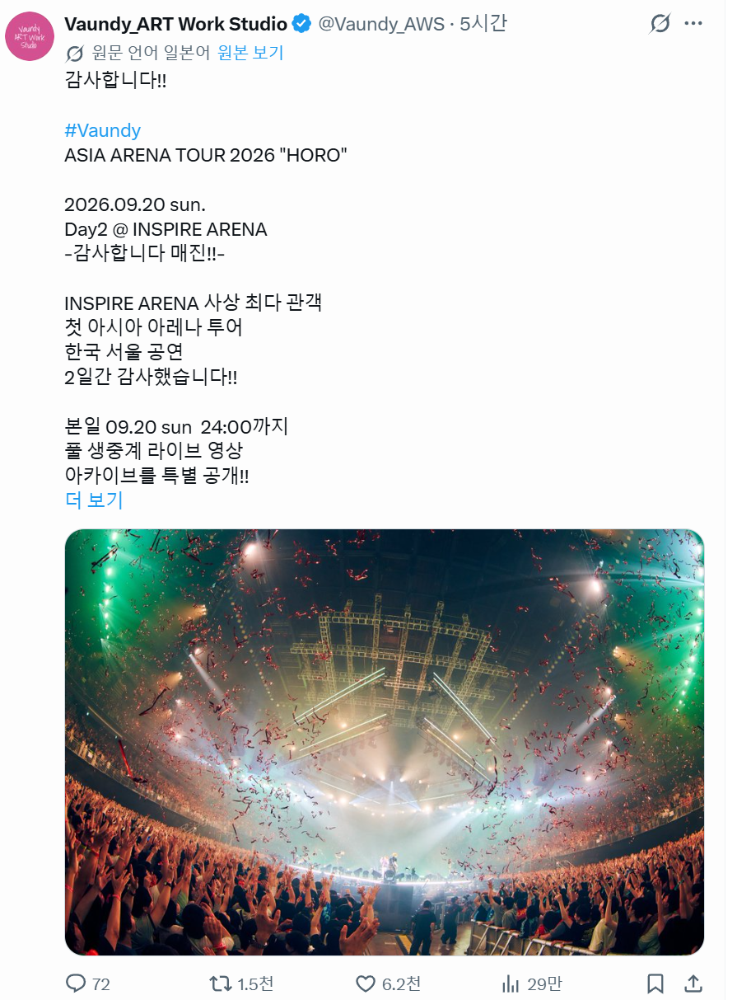
인스파이어 아레나에서 공연한 일본가수 최초로
360도 중앙무대 시도함
뭐 역시나 이틀간 전부 매진
일본 아티스트가 한국에서 공연하면
거리도 가까우니깐 일본의 팬들도 상당히 넘어와서
공연을 같이보는 특징이 있음
그런데 한국 공연 내내 이런분위기여서
일본의 팬들이 놀램
일본 밴드들의
한국 팬 비율을 보면
보통 여자 비율이 상당한데
바운디는 신기하게 자지팬들이 존나 많아서
신교대 종교행사마냥
우어우어우어 거리면서 환호성 지르면서 떼창부름
같이 공연 본 일본팬들이나
공식 바운디 유튭채널에서 한국 내한 공연을 한시 무료상영해줬는데
(개인적으로는 일본 기획사 치고 존나 파격적이라고 생각함)
그걸 본 일본의 바운디 팬들은
아래와 같이 반응함
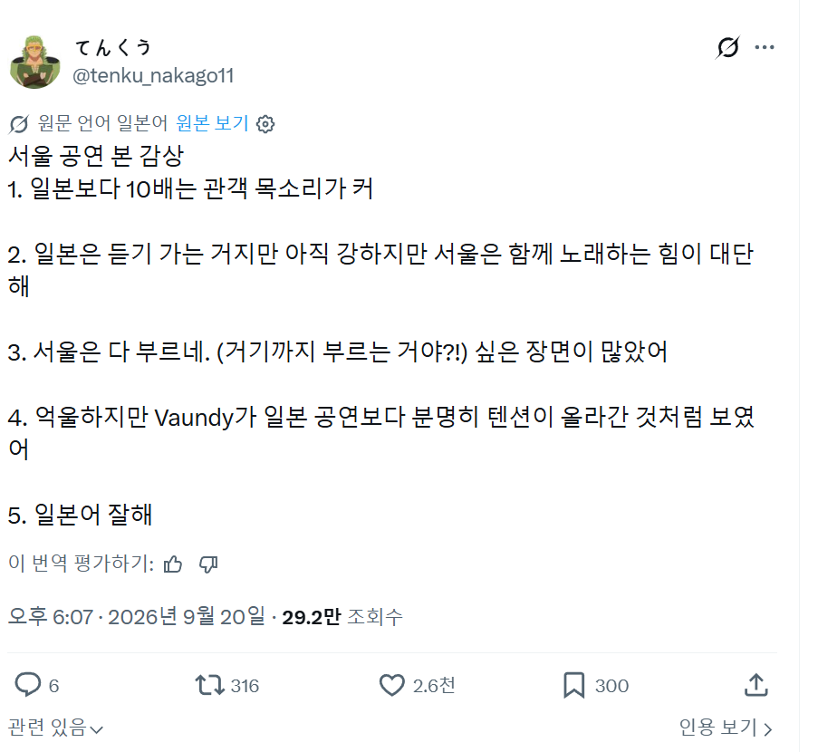
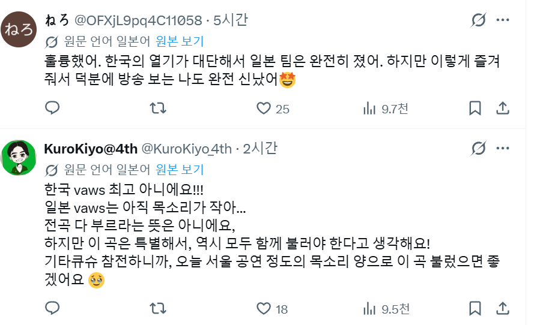
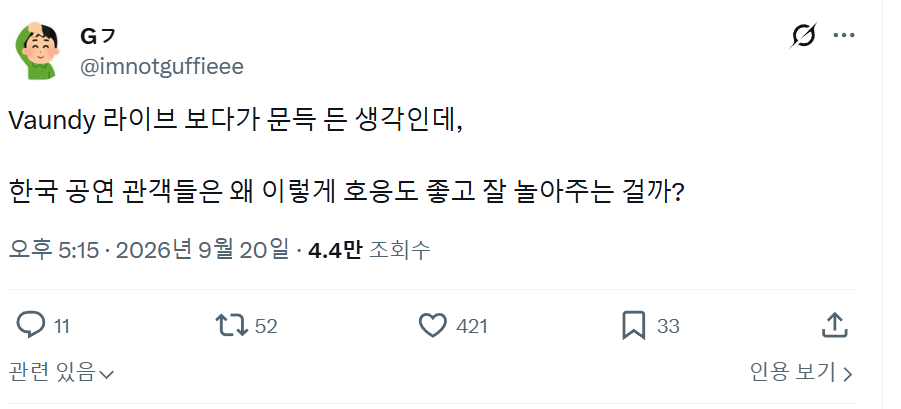
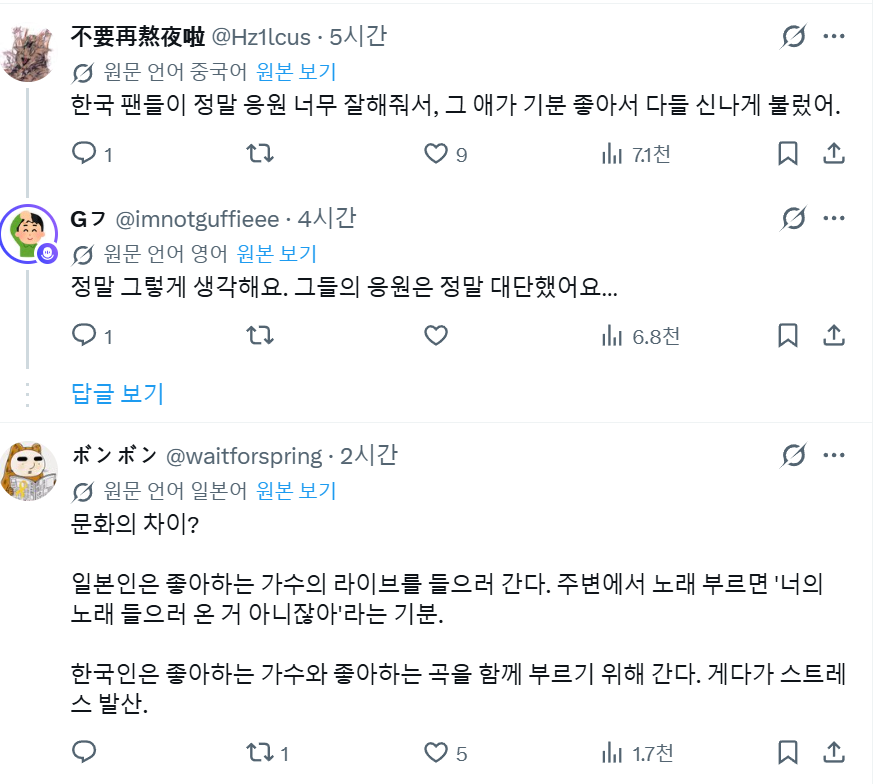
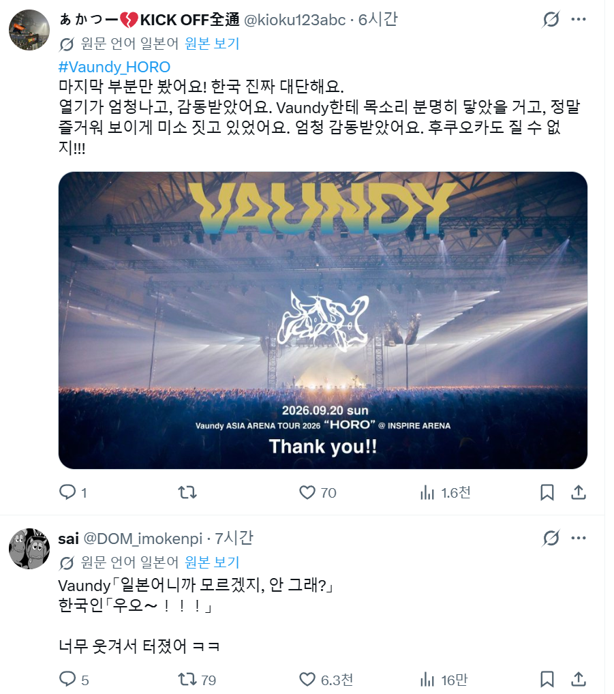
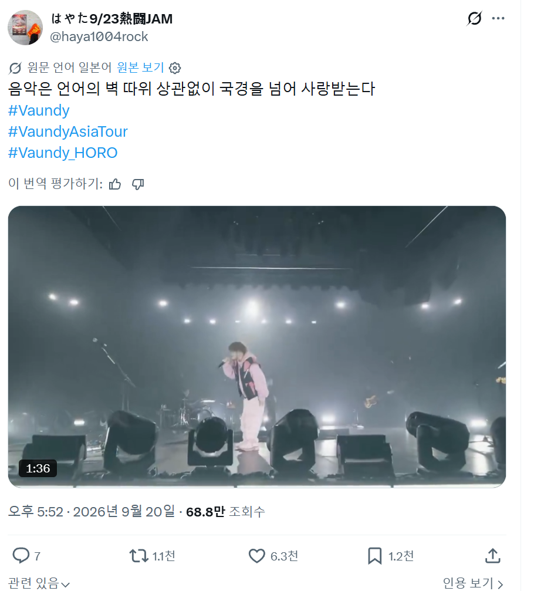
한국과 일본의 공연문화의 차이에 대해
토론하기 시작하면서
한국의 공연 문화를 부러워하는 사람들이 많음
일본의 바운디팬들도 질수없어! 하면서
귀여운 반응들을 많이 보임
하지만 일본의 공연문화는
한국과 달라서 아티스트의 공연에 집중해서 청취하는느낌이라
한국처럼은 힘들다는듯
근데 너무 일본의 바운디팬들이 자학하면서
한국팬들을 띄워주니깐
이에 대해 반감가진 사람들도 나오긴함
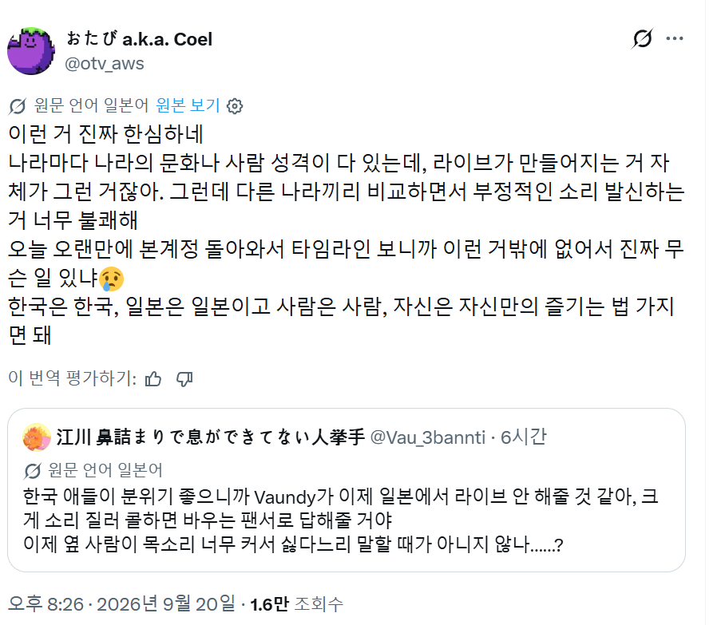
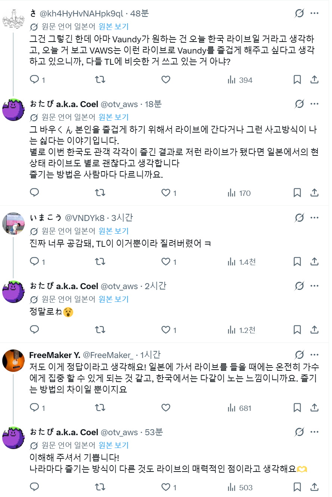
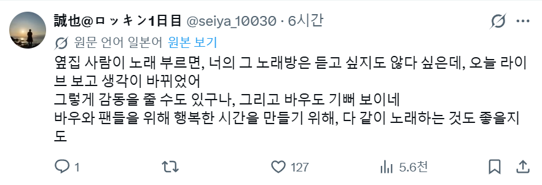
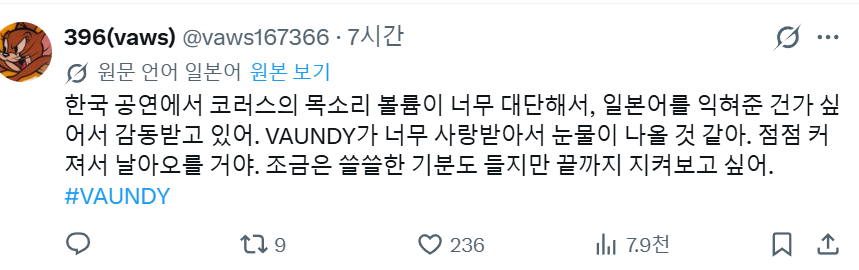
일본 아티스트의 내한으로
이렇게 시끌벅적한 반응은 처음봐서
한번 올려봤음
참고로 이번 주말에
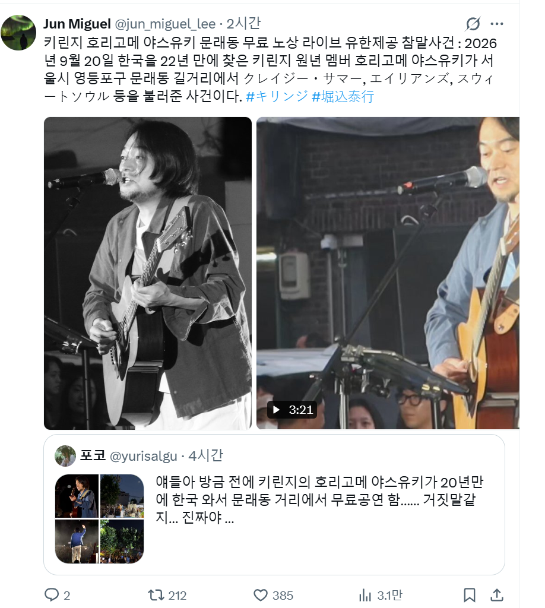
뭔일인지 몰라도
키린지의 멤버가 한국에서 길거리
무료공연을 하고 갔다는듯
양 국가의 민간 문화교류가
갈수록 가까워지는느낌
물론 인터넷상에서
혐한혐일이 서로 싸우는것도 여전한데
다행인건 혐한혐일 하는 사람들 계정들어가보면
정상인 사람들을 본적이 없어서
그게 일반적인건 아니구나 라는 생각을함

일본에서 한로로나 악뮤같은 가수들이 공연하는 날도 올까
일본공연하는 한국가수들은 케이팝아이돌밖에 없어서 수요자가 좀 한정된 느낌